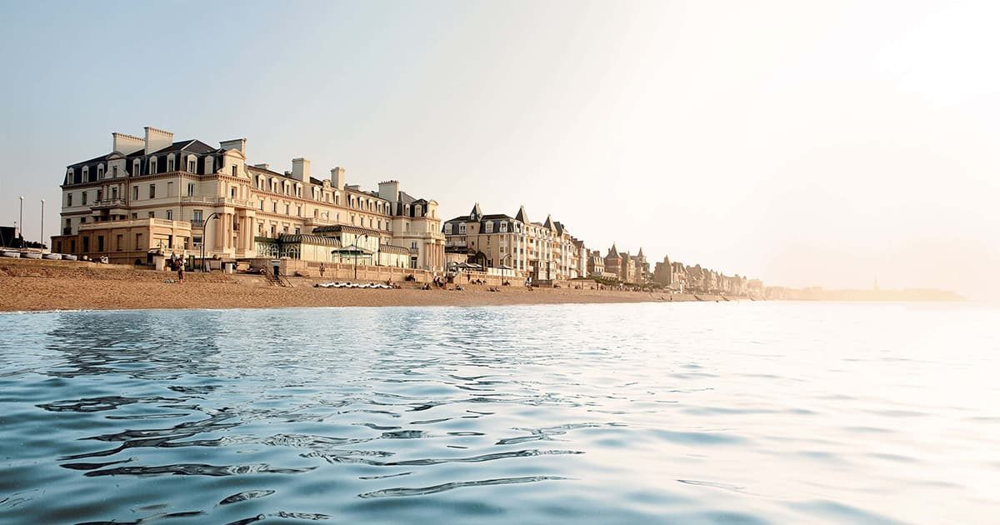
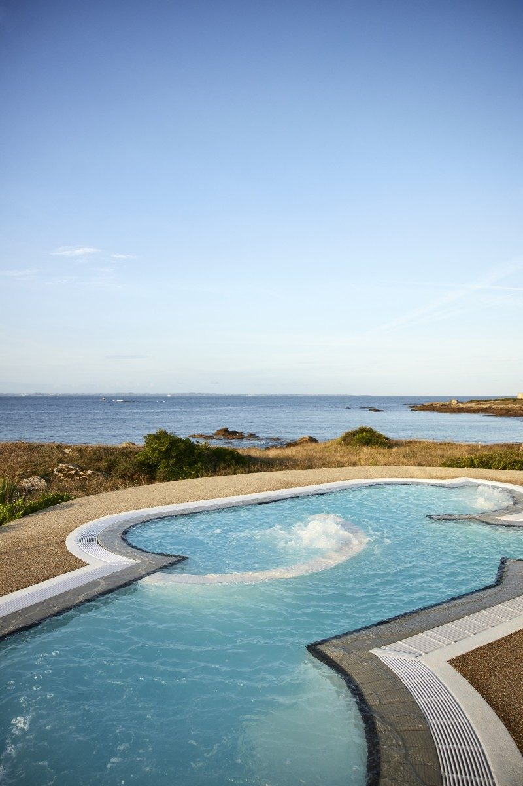
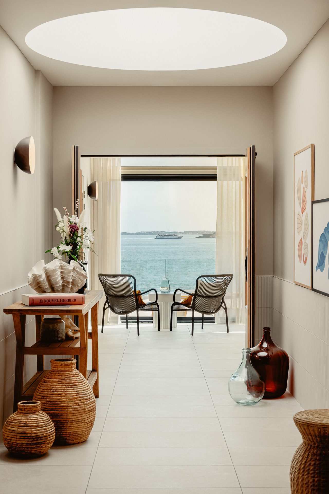
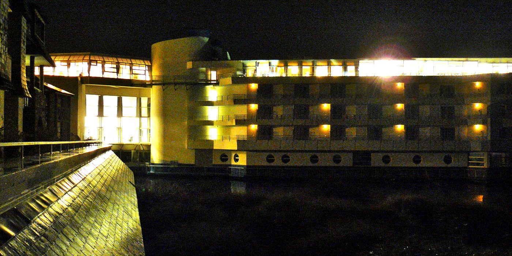
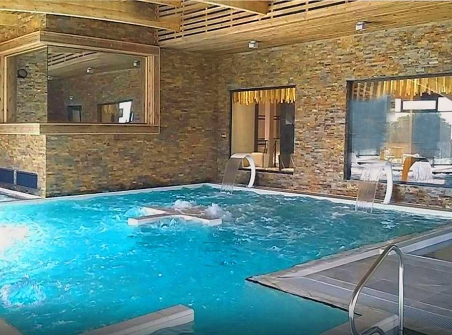
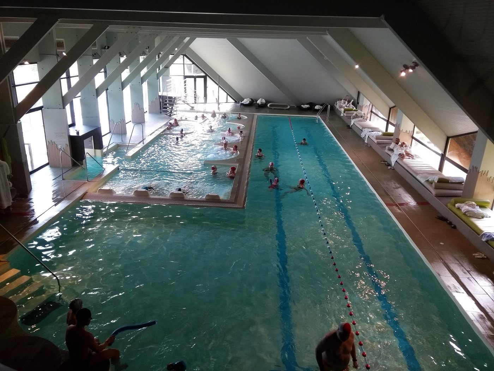
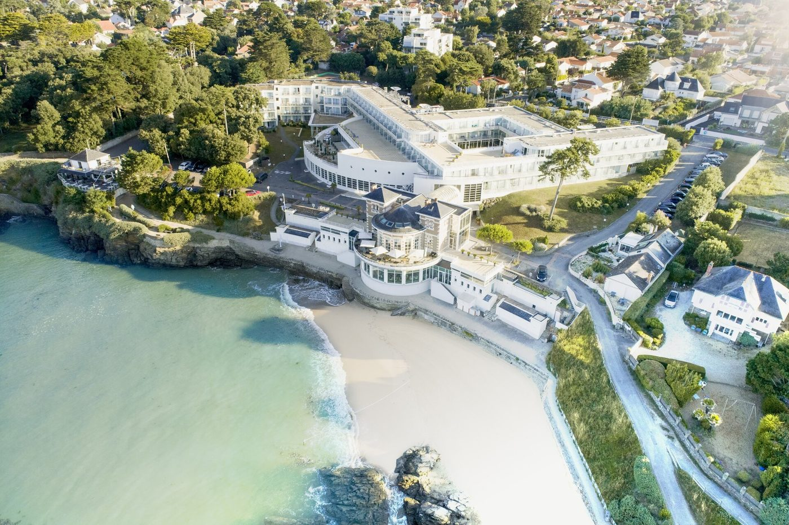

Meilleure thalasso en Bretagne : 11 adresses testées
La thalassothérapie est née ici, à Roscoff, en 1899. Cent vingt-sept ans plus tard,
onze centres testés au thermomètre et au chronomètre, notés sur 20, avec un critère
d'entrée que beaucoup préfèrent taire : l'eau doit venir de la mer.
Par Swann Bertaud, rédacteur hôtellerie de luxe✺Publié le 25 juillet 2026✺18 min de lecture
Le Castel Clara, sur la falaise de Goulphar à Belle-Île-en-Mer : premier du classement avec 17,6/20.
TL;DR : l'essentielLe podium breton 2026
Castel Clara Thalasso & Spa, Belle-Île-en-Mer, 17,6/20 :
une falaise, 1 000 m² de bassins, et l'indice Atlantique le plus élevé du classement.
Il faut prendre le bateau, et c'est précisément l'argument.
Les Thermes Marins de Saint-Malo, 17,2/20 :
environ 5 000 m² de bassins et le parcours Aquatonic, le plus complet de Bretagne.
Sofitel Quiberon Thalassa, 16,9/20 :
le centre fondé par Louison Bobet en 1964, toujours la référence des cures médicalisées.
Le critère qui exclut : nous ne retenons que les centres
pompant l'eau de mer en circuit ouvert, filtrée et chauffée avant usage.
Un bassin rempli d'eau du robinet resalée n'est pas une thalasso, c'est une piscine chaude.
La distinction est la même que celle appliquée dans notre
classement francilien.
Le périmètre, dit franchement
La Bretagne administrative compte quatre départements : le Finistère, les Côtes-d'Armor,
le Morbihan et l'Ille-et-Vilaine. Neuf des onze centres de ce classement s'y trouvent.
Les deux autres, La Baule et Pornic, sont en Loire-Atlantique, département
rattaché à la région Pays de la Loire depuis 1956, mais qui appartenait au duché de Bretagne
et que la plupart des Bretons considèrent toujours comme breton.
Nous les avons gardés, parce qu'un lecteur qui cherche une thalasso « en Bretagne » depuis
Nantes ou Rennes les inclura naturellement dans sa recherche. Mais la colonne du tableau
indique le département de chacun : à vous de tracer la frontière où vous l'entendez.
Nous préférons le dire que le dissimuler.
Pourquoi la thalasso est née ici
En 1899, le docteur Louis Bagot, médecin de campagne à Saint-Pol-de-Léon,
ouvre à Roscoff l'Institut marin de Rock'Roum. Il avait remarqué que les
maraîchers du Léon, perclus de rhumatismes, allaient mieux après des bains d'eau de mer chauffée.
C'est le premier centre de thalassothérapie de France, et l'acte de naissance d'une filière.
L'institut ferme à la mort de Bagot en 1941, rouvre en 1953 sous l'impulsion de son fils René.
Le second acte se joue en mai 1964, quand Louison Bobet,
triple vainqueur du Tour de France remis d'un grave accident de voiture grâce aux bains marins,
fonde l'institut de Quiberon. Il y apporte ce qui manquait : la rigueur du protocole sportif,
le suivi, la mesure. La thalasso cesse d'être une cure de confort pour devenir une discipline.
Géographiquement, l'Atlantique breton n'est pas la Méditerranée. Sa salinité tourne autour de
35 g/L, sa température naturelle oscille entre 12 et 16 °C selon la saison, contre 18 à 22 °C
au sud. Cette eau plus froide et plus brassée impose des protocoles différents : bains courts,
remontée progressive en température, alternance chaud-froid. C'est plus exigeant, souvent plus
efficace, et nettement moins confortable. Notre
palmarès des thalassos du sud détaille l'autre école.
Le tableau : 11 centres, scores et prix
Rang
Centre
Ville
Département
Score LMHS
Indice Atlantique
Nuit dès
01
Castel Clara Thalasso & Spa
Belle-Île-en-Mer
Morbihan
17,6/20
5/5
240 €
02
Les Thermes Marins de Saint-Malo
Saint-Malo
Ille-et-Vilaine
17,2/20
4,5/5
220 €
03
Sofitel Quiberon Thalassa
Quiberon
Morbihan
16,9/20
4,5/5
280 €
04
Roz Marine Thalasso
Perros-Guirec
Côtes-d'Armor
16,4/20
4,5/5
220 €
05
Hôtel Barrière Le Royal La Baule
La Baule
Loire-Atlantique
16,0/20
4/5
350 €
06
Emeria Dinard Thalasso & Spa
Dinard
Ille-et-Vilaine
15,7/20
4/5
250 €
07
Miramar La Cigale
Arzon
Morbihan
15,3/20
4/5
170 €
08
Thalasso Concarneau Spa Marin
Concarneau
Finistère
15,0/20
3,5/5
100 €
09
Valdys Thalasso Douarnenez
Douarnenez
Finistère
14,4/20
3,5/5
110 €
10
Thalasso Carnac
Carnac
Morbihan
14,0/20
3,5/5
240 €
11
Alliance Pornic Thalasso & Spa
Pornic
Loire-Atlantique
13,6/20
3/5
240 €
Lecture des prix : tarif d'appel pour une nuit en chambre double
en basse saison, relevé en juillet 2026, hors forfait soins. Les tarifs de Quiberon, Saint-Malo et
Carnac reprennent ceux publiés dans notre
palmarès national. Les autres sont des
ordres de grandeur constatés, à confirmer lors de nos prochaines visites. Un prix sans date de
relevé est une information morte : en juillet et en août, comptez 40 à 60 % de plus.
Les 11 centres, du meilleur au dernier
01
Castel Clara Thalasso & Spa 17,6/20
Belle-Île-en-Mer, Morbihan, port de Goulphar, 45 minutes de ferry depuis Quiberon.
Il faut prendre le bateau. C'est le premier filtre, et le meilleur : à Belle-Île, la
clientèle de passage n'existe pas. Le Castel Clara est posé sur la falaise de Goulphar,
deux bâtisses blanches à toits d'ardoise, soixante-six chambres qui regardent toutes l'océan.
En bas, les aiguilles de Port-Coton, celles que Monet a peintes trente-neuf fois.
Le centre : 1 000 m² de bassins d'eau de mer, intérieur et extérieur,
sauna et hammam, avec cette lumière atlantique rasante qui entre par les baies et change
toutes les heures. Les cures sont bâties avec Thalion, laboratoire breton
installé à Plobannalec, dont les actifs viennent des algues récoltées au large.
Ce qui distingue : l'absence de technologie démonstrative. Pas d'écran,
pas de cabine à promesse. Des mains, de l'eau, des algues brunes, et des praticiens formés
au geste long. Dans un secteur qui court après le gadget, c'est devenu une singularité.
Le bémol LMHS : l'insularité se paie deux fois. Le ferry impose des horaires
et un budget supplémentaire, et hors saison, les traversées se raréfient. Le centre est aussi
le plus petit du haut de classement : à 1 000 m², il fait quatre fois moins que Saint-Malo,
ce qui se sent dès qu'il affiche complet.
Morbihan · Falaise de Goulphar · 66 chambres · 1 000 m² de bassins · Produits Thalion · Indice Atlantique 5/5 · Nuit dès 240 €
02

Les Thermes Marins de Saint-Malo 17,2/20
Saint-Malo, Ille-et-Vilaine, Grand Hôtel des Thermes, sur la digue du Sillon.
Le Grand Hôtel des Thermes n'est pas dans la ville close, contrairement à ce qu'on lit
souvent : il est sur la grande plage du Sillon, à environ un kilomètre et demi
des remparts, face au large. La différence compte, parce qu'elle donne au bâtiment de 1883 ce
que l'intra-muros ne pourrait pas offrir : la mer devant les fenêtres, et le vent qui va avec.
Le centre : c'est le plus vaste de Bretagne, environ 5 000 m²,
et le plus complet. Le parcours Aquatonic, bassin d'eau de mer chauffée à 34 °C
équipé de dizaines de postes d'hydromassage, est le modèle que les autres centres ont copié
pendant vingt ans. L'eau est pompée au large, filtrée, chauffée, puis rejetée.
Pour qui : les cures longues, six jours et plus, et ceux qui veulent la
thalasso sans renoncer à la ville. Les remparts, les bars de l'intra-muros et le tombeau de
Chateaubriand sur le Grand Bé sont à un quart d'heure de marche sur la digue.
Le bémol LMHS : la fréquentation. C'est le centre le plus connu de Bretagne,
et en période de vacances scolaires, l'Aquatonic ressemble davantage à un parc aquatique qu'à
un lieu de soin. Réservez les créneaux d'ouverture, ou venez hors saison.
Ille-et-Vilaine · Grand Hôtel des Thermes, 1883 · Plage du Sillon · Environ 5 000 m² · Parcours Aquatonic · Indice Atlantique 4,5/5 · Nuit dès 220 €
03

Sofitel Quiberon Thalassa sea & spa 16,9/20
Quiberon, Morbihan, pointe de la presqu'île, face à la Côte sauvage.
C'est ici que Louison Bobet a ouvert son institut en mai 1964,
après qu'un accident de voiture l'eut laissé diminué et que les bains marins l'eurent remis
debout. Soixante-deux ans plus tard, Quiberon reste la référence française de la
cure médicalisée, celle qui commence par un bilan et se termine par un
protocole écrit.
Le centre : environ 5 000 m², un parcours marin à plusieurs ateliers dont un
bassin extérieur chauffé face à l'océan, et une eau pompée en circuit ouvert. Les soins
s'appuient sur Algologie, autre laboratoire breton, installé à Roscoff.
Ce qui distingue : le suivi. Là où la plupart des centres vous saluent
à la sortie, Quiberon construit ses programmes autour d'un bilan initial et d'un
accompagnement qui se prolonge après le séjour. C'est l'héritage Bobet, et il tient.
Le bémol LMHS : l'architecture des années soixante-dix a mal vieilli, et la
rénovation des chambres n'a pas effacé le sentiment d'un grand ensemble un peu daté. Le tarif
d'appel, à 280 €, est aussi le plus élevé du trio de tête pour un confort inférieur à
celui du Castel Clara.
Morbihan · Fondé par Louison Bobet en mai 1964 · Environ 5 000 m² · Produits Algologie · Cures médicalisées avec suivi · Indice Atlantique 4,5/5 · Nuit dès 280 €
04
Roz Marine Thalasso 16,4/20
Perros-Guirec, Côtes-d'Armor, plage de Trestraou, sur la Côte de Granit rose.
C'est la plus récente du classement, et elle avait tout pour être une usine à bien-être.
Elle ne l'est pas. Le bâtiment joue franchement la carte locale : blocs de granit
rose apparents, fresques marines, objets bretons chinés plutôt que catalogués.
Face à l'établissement, l'archipel des Sept-Îles et sa colonie de fous de Bassan, la plus
importante de France.
Le centre : deux parcours distincts, ce qui est rare. Le parcours
Celtique enchaîne hammam, saunas et bains toniques pour jouer sur l'alternance
chaud-froid, tandis que le parcours marin propose bassins à geysers, couloir de marche et
gymnastique aquatique. À côté, une zone d'hydrothérapie complète avec cryothérapie corps entier.
Le bémol LMHS : la nouveauté a un coût, et Roz Marine affiche des tarifs
de haute saison qui la placent au niveau d'établissements bien plus établis. Le quartier de
Trestraou, très fréquenté l'été, n'a pas le calme des adresses du Morbihan.
Côtes-d'Armor · Plage de Trestraou · Face aux Sept-Îles · Parcours Celtique et parcours marin · Cryothérapie · Indice Atlantique 4,5/5 · Nuit dès 220 €
05
Hôtel Barrière Le Royal La Baule 16,0/20
La Baule, Loire-Atlantique, front de baie. Hors Bretagne administrative,
en Bretagne historique.
Palace Belle Époque de 1896, Le Royal domine les neuf kilomètres de sable de la baie de
La Baule, l'une des plus longues plages d'Europe. Les chambres, redécorées dans des beiges et
des bleus empruntés aux marais salants de Guérande voisins, jouent la
continuité avec le paysage plutôt que le contraste.
Le centre : l'ancienne thalasso a cédé la place à un espace de nouvelle
génération orienté longévité, avec piscine d'eau de mer chauffée, zones de flottaison, hammam,
sauna et cabines duo. La signature locale, ce sont les gommages aux
cristaux de sel de Guérande et le bassin de flottaison aux eaux mères,
cette saumure très concentrée récoltée en fin de cycle dans les œillets.
Le bémol LMHS : c'est l'adresse la plus chère du classement, et le virage
« longévité » déplace le curseur du soin marin vers le bilan préventif, à un tarif qui n'a
plus grand-chose à voir avec une cure de thalasso classique. Ceux qui viennent pour l'eau de
mer et rien d'autre trouveront moins cher ailleurs.
Loire-Atlantique · Palace Belle Époque, 1896 · Baie de 9 km · Sel et eaux mères de Guérande · Indice Atlantique 4/5 · Nuit dès 350 €
06

Emeria Dinard Hôtel Thalasso & Spa 15,7/20
Dinard, Ille-et-Vilaine, en surplomb de la plage de Saint-Enogat, Côte d'Émeraude.
Dinard est la station où les Britanniques ont inventé les bains de mer à la française,
et Emeria en occupe le meilleur balcon : une vue à 180 degrés sur la Manche, l'aile
« côté mer » rénovée dans des pastels marins, l'aile « cottage » plus feutrée avec ses
touches d'ardoise.
Le centre : 2 800 m², un bassin intérieur avec parcours marin, marche à
contre-courant et zone de nage, deux bassins d'activités et un bassin extérieur de 60 m²
ouvert sur le paysage. La partie esthétique, très développée, vise l'anti-âge et la minceur
avec des technologies de dermo-esthétique.
Le bémol LMHS : la part esthétique prend beaucoup de place, au risque de
brouiller le message. On vient à Dinard pour l'eau de mer et la lumière de la Côte d'Émeraude,
moins pour un catalogue de protocoles technologiques qu'on retrouve dans n'importe quel
institut urbain.
Ille-et-Vilaine · Plage de Saint-Enogat · Vue à 180° sur la Manche · 2 800 m² · Bassin extérieur 60 m² · Indice Atlantique 4/5 · Nuit dès 250 €
07

Miramar La Cigale Hôtel Thalasso & Spa 15,3/20
Arzon, Morbihan, presqu'île de Rhuys, port du Crouesty.
Le bâtiment a la forme d'un paquebot, amarré sur un plan d'eau de mer à l'entrée du golfe
du Morbihan. Le geste architectural est daté, franchement années quatre-vingt, mais il
fonctionne : depuis les baies vitrées, on a le sentiment d'être à bord, et le rythme des
marées finit par imposer le sien.
Le centre : un parcours marin de 318 m², trois bassins d'eau de mer
chauffée et une quarantaine de cabines. L'orientation est nettement sportive, avec
aquafitness, renforcement musculaire et travail postural le matin, récupération marine
l'après-midi.
Le bémol LMHS : le parcours marin est petit pour un établissement de cette
taille, et l'esthétique générale n'a pas suivi les rénovations des concurrents. La presqu'île
de Rhuys est superbe mais très isolée hors saison, avec peu d'alternatives à la restauration
de l'hôtel.
Morbihan · Presqu'île de Rhuys · Parcours marin 318 m² · 3 bassins d'eau de mer · Orientation sport et récupération · Indice Atlantique 4/5 · Nuit dès 170 €
08

Thalasso Concarneau Spa Marin Resort 15,0/20
Concarneau, Finistère, plage des Sables Blancs, à 2 km de la ville close.
C'est le meilleur rapport qualité-prix du classement, et de loin. Le resort combine un
hôtel de 68 chambres et une résidence, dans des tons sable et lin qui reprennent ceux de la
plage voisine. À 2 kilomètres, la ville close, forteresse médiévale posée
sur un îlot au milieu du port, justifie à elle seule le détour.
Le centre : près de 1 500 m², avec un spa marin sous charpente bois dont
le sauna panoramique s'ouvre largement sur l'océan. Les soins s'appuient sur
Thalgo, référence de la cosmétique marine professionnelle.
Le bémol LMHS : à ce tarif, le service est efficace mais standardisé, et
l'établissement assume un positionnement resort plutôt qu'hôtel de caractère. La plage des
Sables Blancs, très fréquentée l'été, perd beaucoup de son charme en pleine saison.
Finistère · Plage des Sables Blancs · Ville close à 2 km · Près de 1 500 m² · Sauna panoramique · Produits Thalgo · Indice Atlantique 3,5/5 · Nuit dès 100 €
09
Valdys Thalasso Douarnenez 14,4/20
Douarnenez, Finistère, baie de Douarnenez, face à l'île Tristan.
La baie de Douarnenez est l'une des plus sauvages de Bretagne, et l'île Tristan, accessible
à marée basse, lui donne son décor. Valdys y exploite un centre sans esbroufe, orienté cure
longue et budget maîtrisé, avec des forfaits qui comptent parmi les plus accessibles de la
région.
Le centre : enveloppements aux algues brunes récoltées localement, bains
bouillonnants, massages sous affusion, drainage lymphatique. Le catalogue est classique et
assumé comme tel, sans programme signature ni technologie de pointe.
Le bémol LMHS : l'hébergement est nettement en dessous du niveau du centre
de soin, en résidence plutôt qu'en hôtel, et la décoration n'a pas été reprise depuis
longtemps. On vient ici pour les soins et pour la baie, pas pour la chambre.
Finistère · Baie de Douarnenez · Face à l'île Tristan · Algues brunes locales · Cures longues à tarif contenu · Indice Atlantique 3,5/5 · Nuit dès 110 €
10

Thalasso Carnac 14,0/20
Carnac, Morbihan, Carnac-Plage, à 2 km des alignements mégalithiques.
Carnac a pour elle une situation que personne ne peut copier : trois mille menhirs dressés
il y a six mille ans à deux kilomètres des bassins, et une plage de sable fin abritée par la
baie de Quiberon. Le centre exploite 650 m² de bassins et une carte de soins bâtie autour de
l'eau de mer et des algues.
C'est aussi la seule adresse de ce classement qui figure déjà dans notre
palmarès des thalassos du sud, où elle sert de
point de comparaison hors zone. Le score y est identique, 14,0/20 :
c'est le même centre, évalué au même instrument.
Le bémol LMHS : 650 m² de bassins, c'est peu, et la fréquentation estivale
de Carnac-Plage sature vite l'espace. L'établissement vit beaucoup sur la notoriété des
mégalithes, et l'offre de soins n'a pas la profondeur de celle des centres du haut de tableau.
Morbihan · Carnac-Plage · Alignements mégalithiques à 2 km · 650 m² de bassins · 17 cabines · Indice Atlantique 3,5/5 · Nuit dès 240 €
11

Alliance Pornic Hôtel Thalasso & Spa 13,6/20
Pornic, Loire-Atlantique, plage de la Source, pays de Retz.
Hors Bretagne administrative, en Bretagne historique.
L'établissement enlace un ancien casino de la fin du XIXe siècle, qui abrite
aujourd'hui le restaurant principal, et domine la petite plage de la Source. Pornic est une
station balnéaire familiale, facile d'accès depuis Nantes, ce qui explique une bonne part de
sa clientèle.
Le centre : parcours aquatique, sauna, hammam, bassin d'activités et une
zone d'hydrothérapie classique. La particularité tient au bilan d'entrée, appuyé sur plusieurs
appareils de mesure, qui oriente le protocole de la cure. Les soins visage s'appuient sur
Phytomer, laboratoire installé près de Saint-Malo.
Le bémol LMHS : c'est la dernière du classement et le tarif ne le reflète
pas, à 240 € la nuit pour un niveau de prestation inférieur à celui de Concarneau, deux fois
moins cher. La plage de la Source est minuscule et la vue depuis les bassins reste limitée.
Loire-Atlantique · Ancien casino XIXe · Plage de la Source · Bilan d'entrée instrumenté · Produits Phytomer · Indice Atlantique 3/5 · Nuit dès 240 €
Notre méthode et l'indice Atlantique
Ce classement applique le Protocole LMHS, noté sur 20, celui que nous
réservons aux établissements visités anonymement et payés par la rédaction. Quatre piliers de
5 points chacun : Luxe (matériaux, équipements), Mise en scène
(décor, architecture, cohérence), Hospitalité (accueil, service, attention) et
Soin (protocoles, formation des praticiens, marques). C'est le même instrument
que nos deux autres palmarès de thalasso, ce qui rend les scores directement comparables entre
la Bretagne, le sud et
l'Île-de-France.
Attention aux échelles. Une note sur 20 issue du Protocole LMHS
et une note sur 10 issue de notre grille Destination ne se convertissent pas l'une dans l'autre.
Elles ne mesurent pas la même chose et ne reposent pas sur le même niveau de preuve. Le détail
figure sur notre page méthode.
L'indice Atlantique, sur 5
C'est notre indicateur propriétaire pour ce classement. Il mesure l'intensité de
l'expérience marine, indépendamment du confort de l'hôtel, sur trois axes :
la qualité de l'eau (circuit ouvert, température, richesse minérale),
l'immersion côtière (vue depuis les bassins, accès à la plage, exposition aux
embruns) et l'ancrage breton (architecture, matériaux, laboratoires locaux,
cuisine). Il explique pourquoi le Castel Clara, plus petit que Saint-Malo, obtient malgré tout
un 5/5 : sur une falaise de Belle-Île, la mer n'est pas un argument commercial, c'est le décor.
Quelle thalasso pour quel séjour
Cure médicalisée longue :Sofitel Quiberon, pour le
bilan d'entrée et le suivi après séjour, ou Saint-Malo pour
l'ampleur du plateau technique.
Week-end en couple :Castel Clara, si le ferry
ne vous fait pas peur. C'est le seul du classement où l'on a le sentiment d'être vraiment parti.
Premier séjour, budget serré :Concarneau, à
100 € la nuit, avec la ville close à 2 km. C'est l'entrée de gamme du classement, et elle est
largement au-dessus de son prix.
Expérience marine la plus intense :Castel Clara
(5/5) devant Roz Marine et ses deux parcours (4,5/5).
11 centres classés9 en Bretagne administrativeProtocole LMHS · /20Indice Atlantique · /5Eau de mer en circuit ouvert
Questions fréquentes
Quelle est la meilleure thalasso de Bretagne ?
Le Castel Clara Thalasso & Spa, à Belle-Île-en-Mer, avec 17,6/20 au Protocole LMHS et le
seul indice Atlantique à 5/5 du classement. Il doit sa place à la combinaison d'une falaise
dominant l'océan, de 1 000 m² de bassins d'eau de mer et de cures bâties avec le laboratoire
breton Thalion. Les Thermes Marins de Saint-Malo (17,2/20) et le Sofitel Quiberon (16,9/20)
complètent le podium.
Quelle différence entre une thalassothérapie et un spa marin ?
La thalassothérapie utilise de l'eau de mer naturelle, pompée au large en circuit ouvert,
filtrée et chauffée avant usage, puis rejetée. Un spa marin peut se contenter d'eau douce
resalée, dite reconstituée, dont les propriétés n'ont rien à voir. C'est le critère d'entrée
de ce classement, et c'est la même distinction que nous appliquons en
Île-de-France, où très peu d'établissements y satisfont.
Où est née la thalassothérapie ?
À Roscoff, dans le Finistère, en 1899. Le docteur Louis Bagot y ouvre l'Institut marin de
Rock'Roum après avoir observé que les maraîchers du Léon, souffrant de rhumatismes, allaient
mieux après des bains d'eau de mer chauffée. C'est le premier centre de thalassothérapie de
France. Le second acte se joue en mai 1964, quand Louison Bobet fonde l'institut de Quiberon
et y apporte la rigueur du protocole sportif.
Combien coûte une thalasso en Bretagne ?
De 100 à 350 € la nuit en chambre double, hors forfait soins, selon nos relevés de juillet 2026 :
Concarneau ouvre la fourchette autour de 100 €, l'Hôtel Barrière Le Royal La Baule la ferme à
350 €. Comptez 40 à 60 % de plus en juillet et en août. Les forfaits soins s'ajoutent, d'environ
650 € pour une cure de trois jours à 2 500 € pour six jours dans les centres médicalisés.
La Baule et Pornic sont-elles en Bretagne ?
Administrativement, non : elles se trouvent en Loire-Atlantique, département rattaché à la
région Pays de la Loire depuis 1956. Historiquement, oui : la Loire-Atlantique faisait partie du
duché de Bretagne, et la revendication d'un rattachement reste vive. Nous les avons incluses en
l'indiquant clairement dans le tableau, parce qu'un lecteur qui cherche une thalasso « en
Bretagne » depuis Nantes les considérera naturellement.
Quelle saison choisir pour une thalasso en Bretagne ?
Le printemps et l'automne offrent le meilleur compromis : tarifs modérés, centres peu chargés,
et une lumière atlantique qui vaut le déplacement. L'hiver reste pertinent pour les cures, l'eau
étant à sa température la plus basse, entre 12 et 14 °C, ce qui accentue l'effet tonique.
Juillet et août sont à éviter si vous venez pour le calme : les grands centres, Saint-Malo en
tête, sont alors saturés.